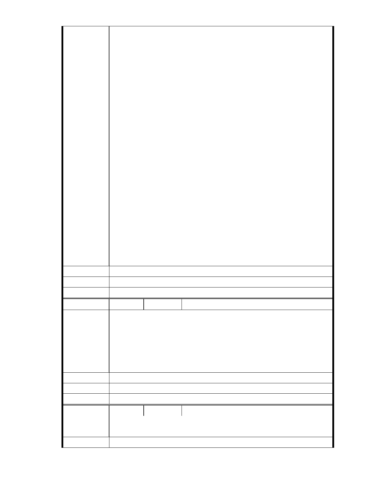

當初慈濟希望不要挖東湖連絡道，這位律師堅決贊成；最後讓本來也是
屬於慈濟園區一部分的東湖連絡道山坡地被強制徵收；拿去挖山開路。
過去主張挖山開路的人，怎麼可能會保護慈濟園區？而且，當初他主張
挖山開路的時候，他有沒有想過那條路就是開在「保護區」裡面？
余律師並非環團隊外主張的過去含慈濟友好，現在反慈濟的人士。從過
去東湖連絡道興建開始，到 2007 年審查等等…這位余律師向來就站在「反
對慈濟不問理由」的陣線上。環團說的那個謊言，是完全經不起考驗的。
這就是過去的真實的歷史。
所以我們看清楚歷史之後，我們就會知道，誰才是真正在保護內湖園區
的人；而誰不是。
答案很清楚，真正保護內湖園區的人是「慈濟」。應該要退出內湖園區的
是誰？是這位余律師還有這些外地來的環團人士。
要呼籲放過內湖園區的對象是這些環團，同時也請他們放過證嚴上人以
及所有的慈濟人。請市政府儘速表現出為政該有的擔當，通過慈濟這個
改善方案。
建議辦法
市 府 說 明 相關陳情意見將納入本案審查人民意見，依法定程序辦理。
委 員 會 決 議 同編號 1.。
編
號 209
陳情人 MA201301110027
慈濟內湖園區它不需列為保護區，因為以慈濟的專業，加上市府的監督，
它的改變將不會破壞周遭環境的，它的興建是正面的，它具有帶動社區
善與愛的能量。
陳 情 理 由 慈濟是服務社會與人類的公益團體，它是正面與受到肯定的，在此呼籲
市府能讓這案子順利通過，如此將受益更多的里民與促進社區善與愛的
循環。
建議辦法
市 府 說 明 相關陳情意見將納入本案審查人民意見，依法定程序辦理。
委 員 會 決 議 同編號 1.。
編
號 210
陳情人 MA201301110075
陳 情 理 由 本人全家及所屬會員全部贊成證嚴上人對慈濟內湖園的作法
建議辦法
- 272 -